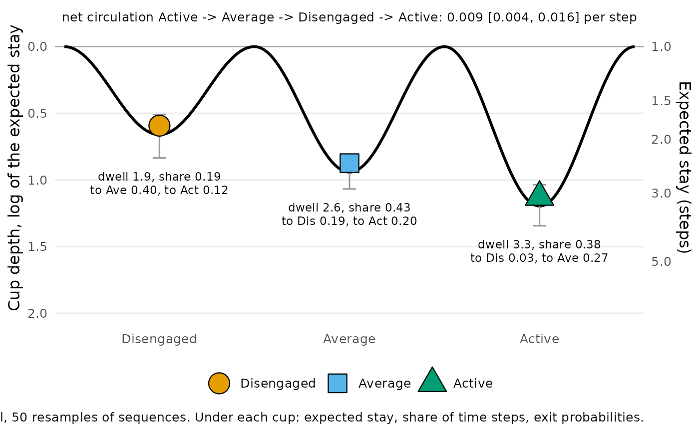

Draws a transition network as a ball-in-cup landscape (Scheffer et al. 2009) in which the depth of each cup is the stability of the state: how long the process stays once it is there. A state with stay probability \(P_{ii}\) is left after \(1 / (1 - P_{ii})\) steps on average (its dwell time), and its cup depth is the log of that time, \(-\log(1 - P_{ii})\), so that dwell time = \(e^{depth}\): the escape-time law of a particle in a potential well (Kramers 1940). A state that is left at once has depth 0, no cup at all. Intervals come from resampling whole sequences.
Usage
stability_landscape(
x,
states = NULL,
iter = 1000L,
ci_level = 0.95,
seed = NULL
)
# S3 method for class 'net_landscape'
summary(object, table = c("cups", "exits", "circulation"), ...)
# S3 method for class 'net_landscape'
print(x, digits = 2, ...)
# S3 method for class 'net_landscape'
plot(x, ...)Arguments
- x
A transition network from
build_network()(method"relative"or"frequency"), a grouped one (netobject_group, for examplebuild_network()of abuild_clusters()result) or a wide sequence data frame or matrix. The network must carry its sequences. For theprint()andplot()methods: an object of classnet_landscape.- states
Character vector naming every state once, in the order to draw them (for example from least to most engaged). Default: the alphabetical order.
- iter
Integer. Bootstrap resamples of sequences. Default 1000.
- ci_level
Numeric in (0, 1). Interval level. Default 0.95.
- seed
Integer or
NULL. Seed for the resampling, scoped to the call (the global random state is restored).- object
A
net_landscapeobject (forsummary()).- table
One of
"cups","exits","circulation". Insummary(): which table to return.- ...
Ignored.
- digits
Integer. Decimal places in
print(). Default 2.
Value
An object of class "net_landscape": one fit per network
("network" for a single one, the group names for a grouped one),
with states, iter and ci_level.
In summary(): a data frame. table = "cups" (default):
one row per network and state, with group, state,
depth, ci_lower, ci_upper, dwell (expected
consecutive steps in the state), stay (\(P_{ii}\)),
share (share of observed time steps in the state), n_from
(transitions out of the state, self-transitions included) and
resamples. table = "exits": one row per network and pair
of distinct states, with probability and count.
table = "circulation": one row per network (three states only),
with cycle (the direction of the net flow), current,
ci_lower, ci_upper and resamples (resamples with a
stationary distribution).
In print(): x, invisibly.
In plot(): a ggplot object, one panel per network.
Details
Network input replays per-sequence weighting, concatenation and boundary markers. Concatenated sequences are the resampling units. With a covariate, its value must be constant within each concatenated unit. Scaled, thresholded or otherwise modified networks whose weights do not match their stored sequences are refused; pass the original sequences to estimate a new landscape. Observed shares count prepared positions without sequence weighting. Phase windows retain the full sequence's weight.
Depth is a property of the state alone; how often the process enters the
state is its share of the observed time steps, reported beside the
depth. Where the process goes when it leaves is in the exit probabilities
(summary(x, table = "exits")), which the plot writes under each
cup. With three states the plot also reports the net circulation, the net
probability flux \(\pi_i P_{ij} - \pi_j P_{ji}\) around the cycle, which
stationarity makes equal on all three edges (Schnakenberg 1976): zero for
a chain whose every transition is as common as its reverse.
In a resample where a state is never left, its depth is infinite, so an
upper interval limit can be Inf; a resample in which a state never
occurs is left out of that state's interval (resamples counts the
rest). Only the cup floors carry data in the plot; the curve between them
is a smooth join, and every rim is drawn at 0.
Errors
nestimate_not_markov for a network that is not a transition
network; nestimate_bad_input for states that do not name
every state once, or input without sequences;
nestimate_landscape_unestimable for a state that is never left or
input with no observed transition.
References
Kramers, H. A. (1940). Brownian motion in a field of force and the diffusion model of chemical reactions. Physica, 7, 284–304.
Scheffer, M., Bascompte, J., Brock, W. A., et al. (2009). Early-warning signals for critical transitions. Nature, 461, 53–59.
Schnakenberg, J. (1976). Network theory of microscopic and macroscopic behavior of master equation systems. Reviews of Modern Physics, 48, 571–585.
Examples
net <- build_network(trajectories, method = "relative")
land <- stability_landscape(net,
states = c("Disengaged", "Average", "Active"), iter = 50, seed = 1)
land
#> Stability landscape: 3 states, 1 network, 50 resamples
#>
#> Cups (depth = log of the expected stay; deeper = more stable):
#> state depth ci_lower ci_upper dwell stay share
#> Disengaged 0.66 0.51 0.83 1.93 0.48 0.19
#> Average 0.94 0.86 1.07 2.56 0.61 0.43
#> Active 1.20 1.04 1.34 3.31 0.70 0.38
#>
#> Net circulation (per step):
#> Active -> Average -> Disengaged -> Active: 0.0092 [0.0038, 0.0157]
#>
#> Exit probabilities: summary(x, table = "exits")
summary(land, table = "exits")
#> group from to probability count
#> 1 network Disengaged Average 0.39692308 129
#> 2 network Disengaged Active 0.12000000 39
#> 3 network Average Disengaged 0.18641811 140
#> 4 network Average Active 0.20372836 153
#> 5 network Active Disengaged 0.03495441 23
#> 6 network Active Average 0.26747720 176
# \donttest{
plot(land)

# }